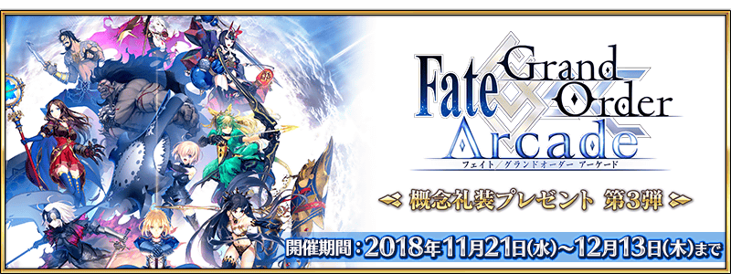
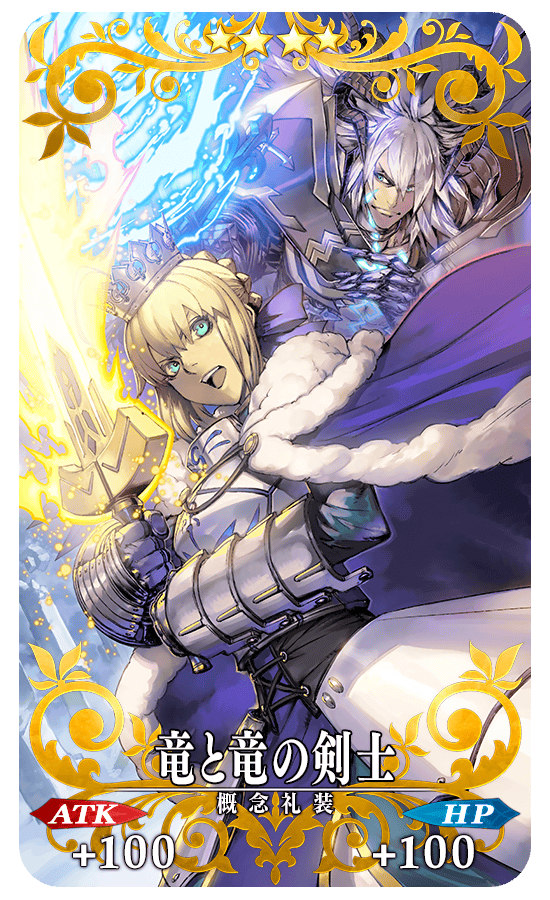
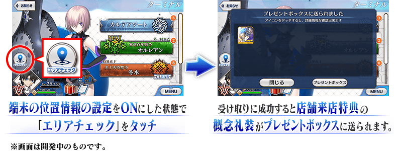

為了紀念「Fate/Grand Order Arcade」的Master突破30萬人，舉辦「Fate/Grand Order Arcade」概念禮裝贈送 第2彈！
◆舉辦期間◆
2018年11月21日(三) AM6:00～12月13日(四) AM5:59
為了紀念「Fate/Grand Order Arcade」的Master突破40萬人，贈送「店舗來店特典」概念禮裝！
在宣傳活動對象店家起動「Fate/Grand Order」程式來取得吧！
◆宣傳活動對象店舗一覧◆
https://arcade.fate-go.jp/locationcampaign/
◆「店舗來店特典」概念禮裝的入手期間◆
2018年11月21日(三) AM6:00～12月13日(四) AM5:59
◆領取條件◆
所有的Master對象
※新Master必須通過推進至「特異點F 炎上汙染都市 冬木 第3節」。
◆「店舗來店特典」概念禮裝◆
|  |
★★★★SR |
可遊玩英靈召喚團隊戰鬥「Fate/Grand Order Arcade」鄰近的店家搜索，請自下述的URL確認。
https://arcade.fate-go.jp/location/

2018年11月21日(三) AM6:00～12月13日(四) AM5:59的舉辦期間中，在管理室(ターミナル)畫面左側會顯示「位置檢查(エリアチェック)」圖示。
在店家內確認通訊環境後，請將使用裝置的位置情報設定調為ON。
通訊狀態不穩和位置情報設定為OFF的情況，會無法順利入手「店家來店特典」的概念禮裝。
※訊號狀況、建物等障礙物等的影響，會有位置情報(GPS)產生誤差的可能性。
因此可能會已在舉辦區域內仍無法領取的情況，請嘗試稍微移動地點。
※領取「店家來店特典」的概念禮裝時，請務必在休息區進行。在機台前和通道等的操作會給其他人帶來麻煩，請注意絕對別進行。
※邊走邊使用智慧型手機會給其他行人帶來麻煩，非常危險請自制。關於在遊玩中發生事故和糾紛不會幫負任何責任。
※給店家內的客人和周圍店家等帶來麻煩的行為(佔座、大聲喧嘩、丟棄垃圾等)請自制。
※請注意在使用裝置沒有位置情報(GPS)設定的功能，無法領取「店家來店特典」。
關於使用裝置的位置情報設定調成ON的詳細方法請在此處的公告確認。